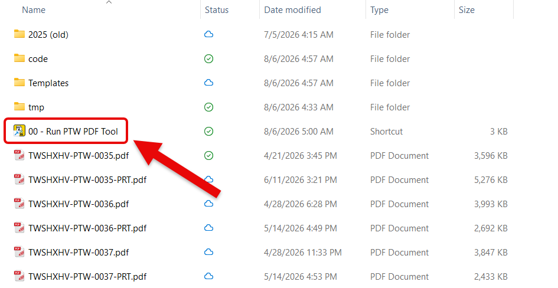
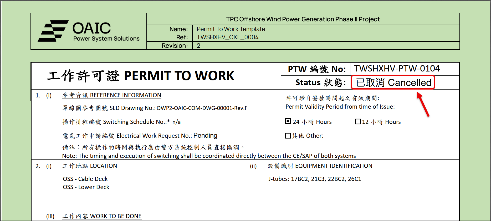
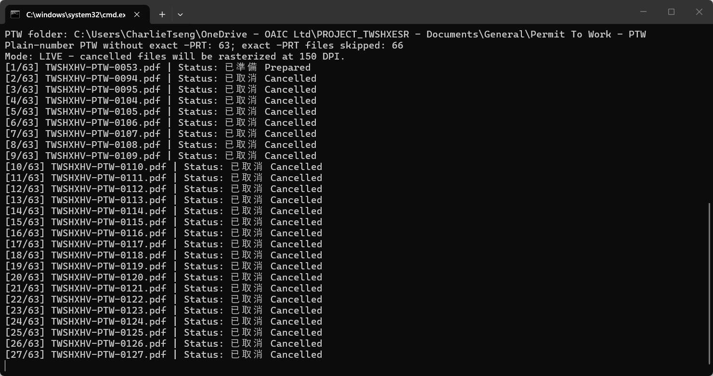
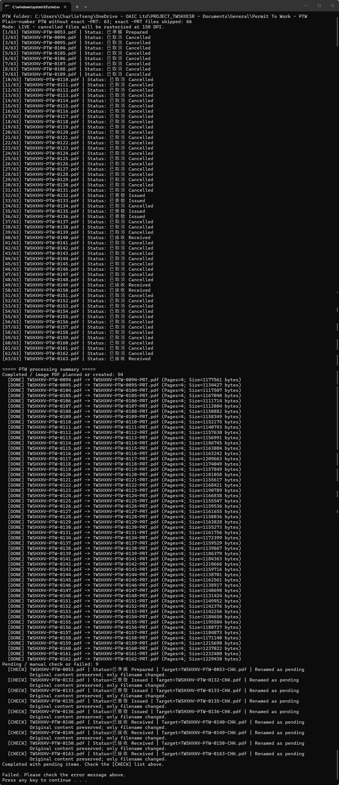
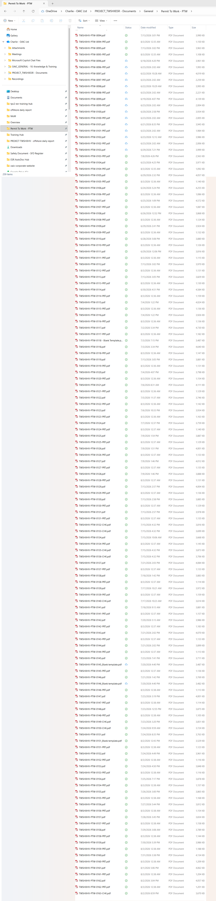

產生圖片化 PTW PDF｜4 步完成¶
自動檢查 PTW Status：Cancelled 產出 -PRT.pdf，其他狀態改為 -CHK.pdf 待確認。
1
在 PTW 資料夾雙擊 .cmd
Process Cancelled PTW - Run.cmd

2
等待程式逐份檢查 Status
畫面會顯示檔名、進度及目前狀態。

3
Cancelled 會建立 -PRT.pdf
原始 PDF 保留；新檔為影像化 PDF。

4
查看 [DONE]、[CHECK] 及輸出檔案
[DONE] = 已建立 -PRT.pdf｜[CHECK] = 已改名為 -CHK.pdf


目前已知狀況
圖中最後出現 Failed，程式仍在調整。請先依 [DONE]／[CHECK] 清單及實際 -PRT／-CHK 檔案確認結果。

處理規則與選用功能
- 只處理
TWSHXHV-PTW-####.pdf且沒有同編號 exact-PRT.pdf的檔案。 Cancelled：保留原始 PDF，另建影像化-PRT.pdf。- 其他狀態：保留內容，只將檔名改為
-CHK.pdf待人工檢查。 - 不覆寫既有檔案。
- 中間 PNG 存於 Windows
%TEMP%，完成後自動清理。 - 如需逐份開啟，可執行 PowerShell 程式並加上
-OpenEach。